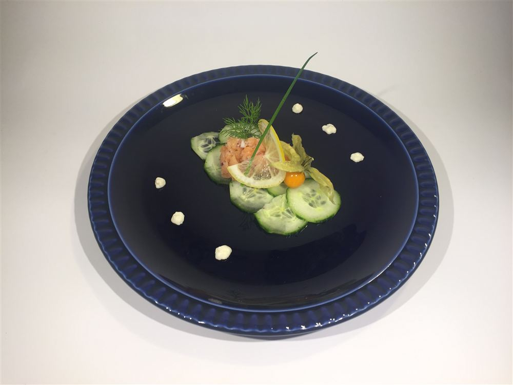
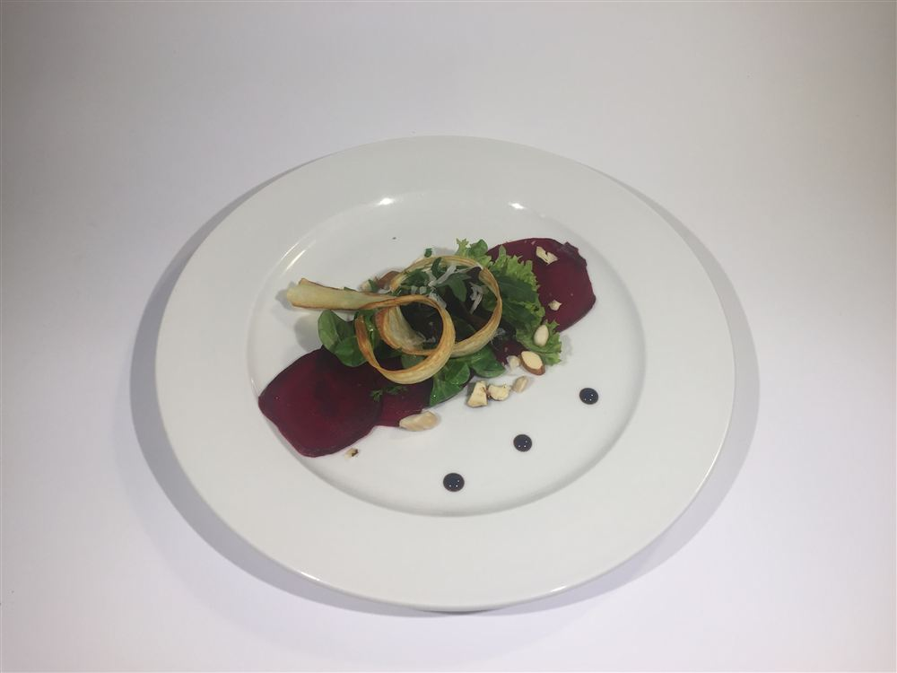
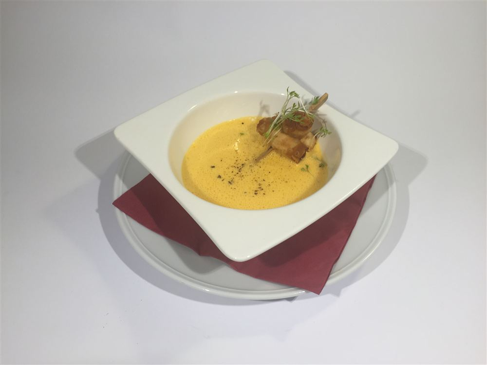
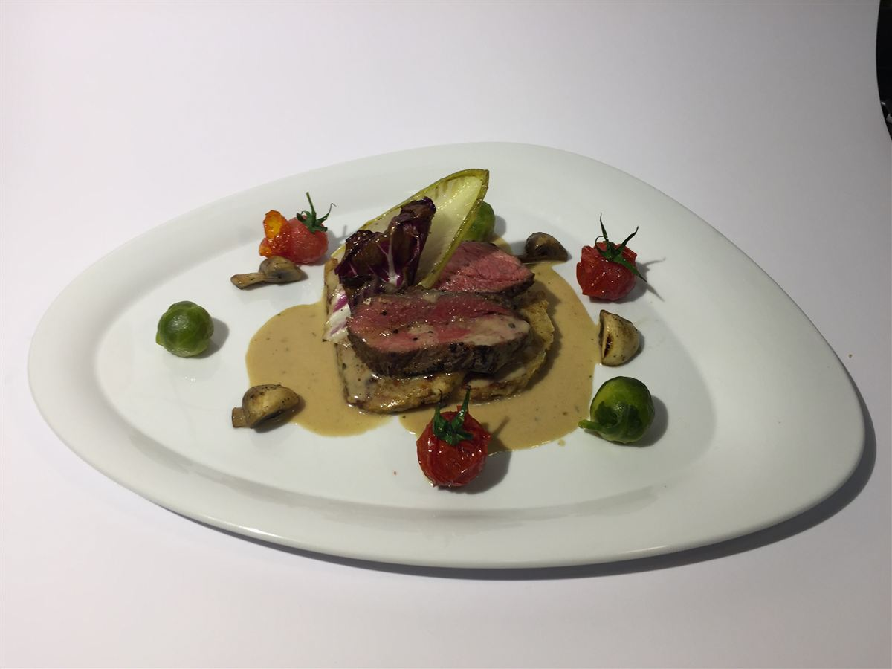
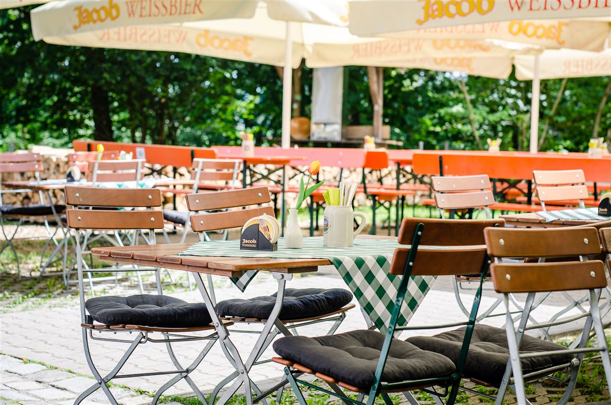

Küche & Genuss
Bayerische Hausmannskost mit Herz
Deftig, regional, frisch zubereitet – serviert im urigen Wirtshaus oder im Biergarten mit Blick über das Regental.

Unsere Philosophie
Ehrliche Küche, bayerische Tradition
Wir kochen, wie man bei uns zu Hause kocht: deftig, ohne Schnickschnack. Vom Zwiebelrostbraten bis zum Flammkuchen – und sonntags der klassische bayerische Braten.
Dazu ein kühles Bier aus der Gegend, serviert im Wirtshaus oder – bei schönem Wetter – unter den alten Bäumen unseres Biergartens mit Blick ins Regental.
Unsere Karte
Was bei uns auf den Tisch kommt
Unsere aktuelle Speisekarte – ehrlich, deftig, zum guten Preis.



Getränke
Getränkekarte
Bier aus der Region, Wein, Aperitifs und alkoholfreie Getränke.

Draußen sitzen
Unser Biergarten
Schattige Plätze unter alten Bäumen, direkt neben der Wallfahrtskirche, mit Blick über das Regental und die Dächer von Roding. An warmen Tagen der schönste Platz weit und breit – ideal nach einer Wanderung oder dem Aufstieg über den Kreuzweg.
Tisch reservieren
Wir halten Ihnen gerne einen Platz frei
Rufen Sie an oder schreiben Sie uns – besonders an Wochenenden empfehlen wir eine Reservierung.